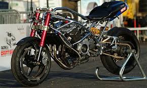
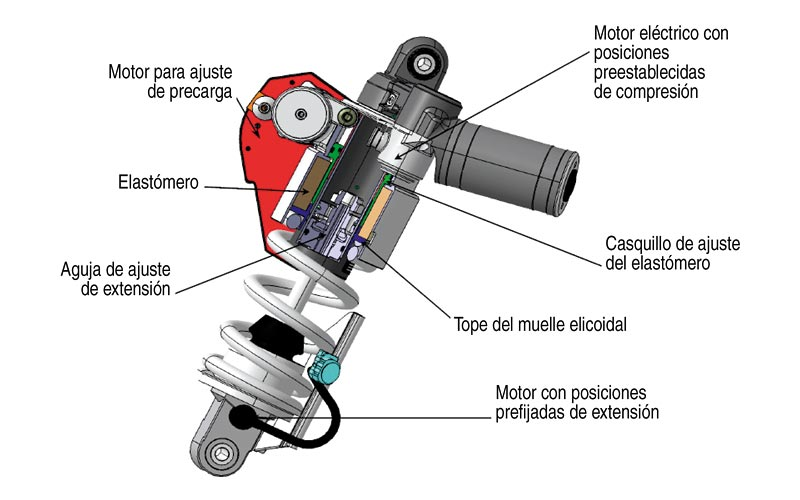
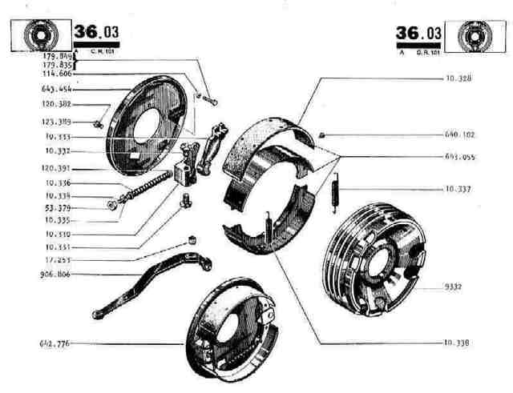
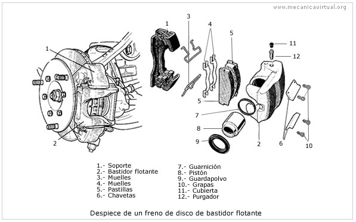

Chasis, suspensión y frenos
La conducción se lleva a cabo por la articulación de la rueda delantera (que gira según un eje vertical), consiguiendo mediante basculación sobre la vertical, la trayectoria en curva requerida por el conductor. Va controlada por un manillar sobre el que están instalados los dispositivos necesarios para control de la motocicleta: palancas de accionamiento del freno delantero, embrague, interruptores de las luces, etc. El chasis, que puede ser simple, de doble cuna, multitubular, de chapa estampada, doble viga, monocasco, etc, suele estar construido preferentemente en acero o aluminio, en casos más raros en magnesio, carbono o titanio. La rigidez y geometría del chasis es vital para su estabilidad. Normalmente la rigidez necesaria va en función de la potencia del motor y las características dinámicas.  Hoy día todas las motocicletas están dotadas de suspensiones, con el fin de mantener las ruedas en contacto con el suelo el máximo tiempo posible al paso por irregularidades, asegurando la estabilidad y aumentar el confort de marcha. La suspensión originalmente era de paralelogramo delante, y atrás se carecía de ella. A partir de la competición se desarrolló la horquilla telescópica patentada por BMW y se introdujo la suspensión trasera, primero de deslizamiento paralelo y luego basculante. Actualmente sigue siendo basculante atrás, pero los amortiguadores pueden tener diferentes posiciones, incluso ser solo uno.  Los frenos son imprescindibles para detener la motocicleta. Suelen ir anclados a las llantas y son accionados por una palanca en el manillar o en el pie. Los hay de dos tipos: de tambor y de disco. El freno de tambor esta compuesto por cinco partes: Zapatas Portazapatas Muelles Tambor Guaya o varilla del freno  Los frenos de disco han ido ganando terreno en el total de motocicletas distribuidas, por ser más eficaces, y disipar mejor el calor generado en la frenada. Los frenos de tambor son muy particulares, porque si una de sus partes no funciona correctamente, la banda emite sonidos, como si fueran chillidos, al momento de frenar la motocicleta.  Algunas motocicletas tienen carenado, cuya finalidad es proteger al conductor del viento y favorecer la velocidad máxima por aerodinámica mejorada. Las motocicletas con suspensión tradicional alteran su longitud entre ejes al frenar (ya que la fuerza de frenado hunde la horquilla, provocando un acortamiento de ejes), eso impide que las maniobras de frenado y giro puedan realizarse simultáneamente (salvo en modelos avanzados con sistemas de suspensión duo-lever o para-lever), ya que al frenar estando inclinada varía la inclinación y por tanto la trayectoria. Disponen generalmente de cambio de marchas que se controla mediante una de las empuñaduras del manillar o mediante una palanca accionada con el pie; algunos modelos de poca cilindrada disponen de cambio por variador (sistema de poleas que mantiene constante la relación de revoluciones del motor mientras se varía la velocidad del vehículo), aunque ya están surgiendo modelos con embrague automático y cambio de velocidades secuencial. La motocicleta se mantiene erguida en recta y mantiene la estabilidad en curva gracias al efecto giroscópico de las ruedas. El diámetro en las ruedas puede estar comprendido entre 21" motos todo-terreno o enduro y 8" minimotos, y una anchura entre 5 cm hasta 210 mm, la diferencia más importante en relación a otros vehículos es la relación peso/potencía, esto caracteriza a la motocicleta de aceleraciones y frenadas fulgurantes difíciles de superar por los más pesados y seguros automóviles.
| INICIO |